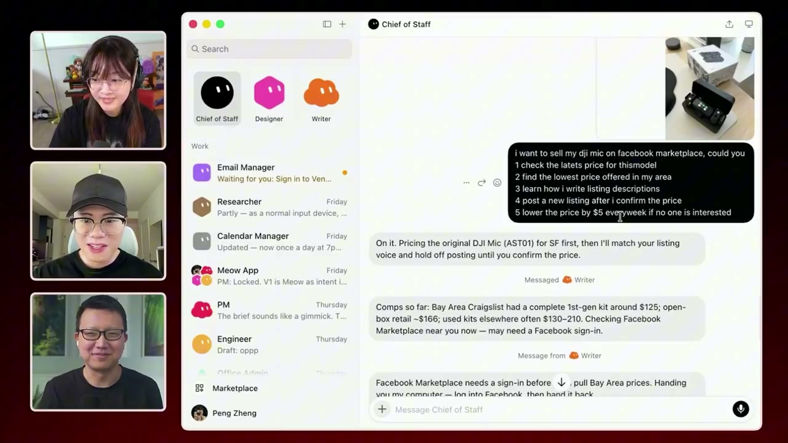
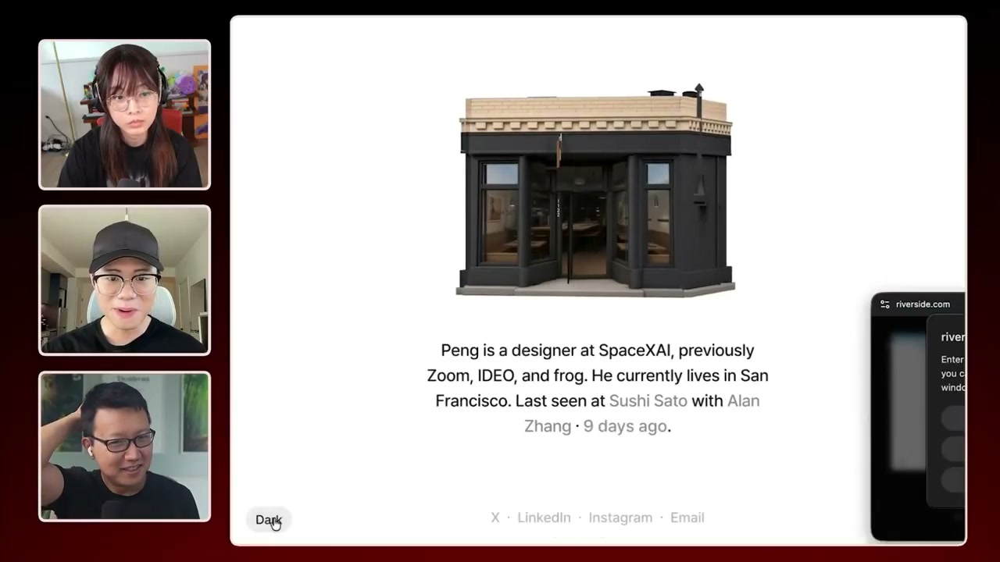
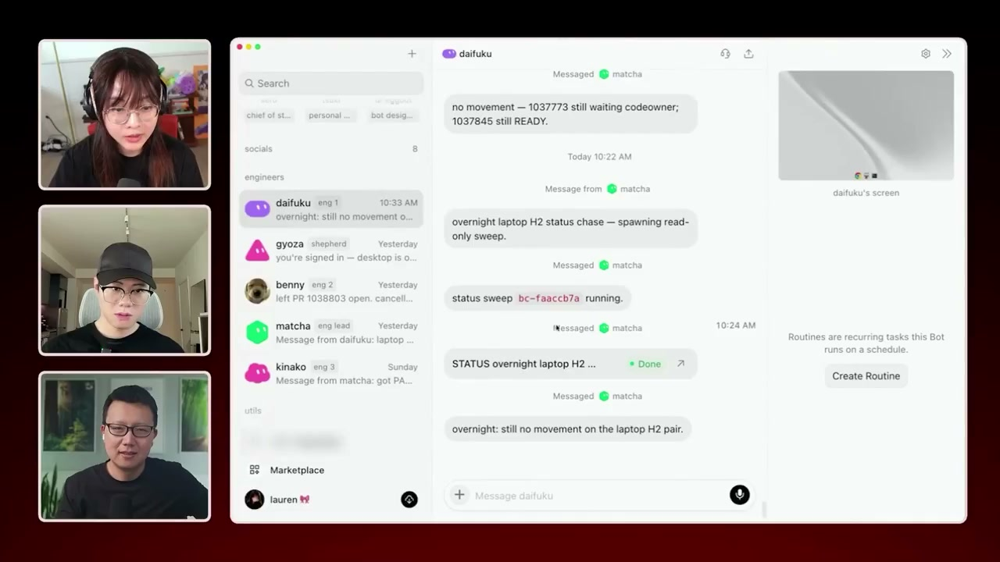
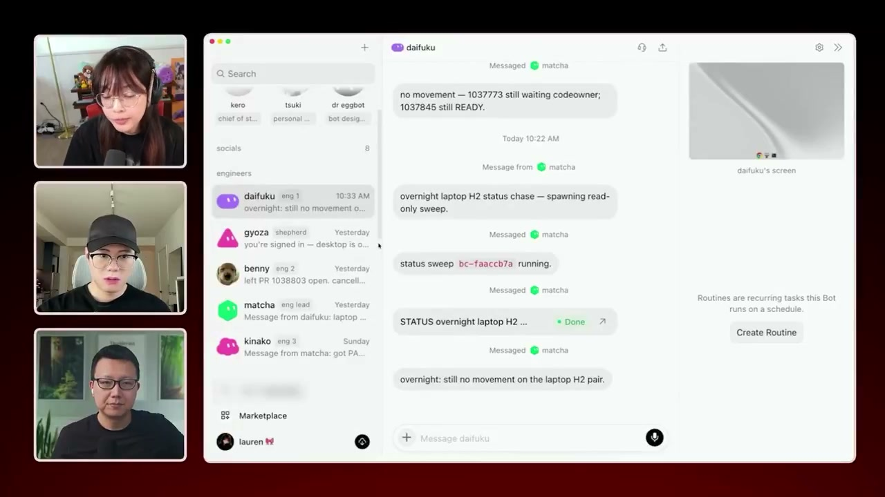
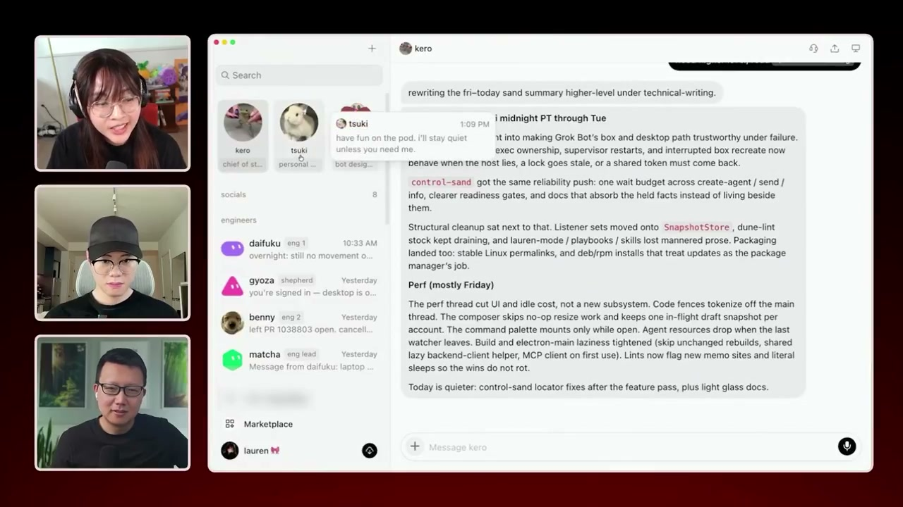

Executive summary
The breakthrough is not 14 bots. It is a legible organization.
In this Behind the Craft episode, Grok Bot builders Peng Zheng and Lauren Tan open their working setups. Peng uses persistent assistants for product, design, engineering, marketplace listings, personal inventory, and travel. Lauren uses a chief of staff, an engineering lead, specialist engineering bots, and cloud coding agents. The number of agents is the least interesting part. What matters is that every level has a different job.
The system separates coordination from execution. A persistent bot remembers the role, tools, preferences, and ongoing context. A temporary project room gathers the right roles around one objective. Specialist bots decompose and supervise work. Disposable cloud agents perform bounded implementation tasks. Humans still approve consequential actions and improve the system when intervention repeats.
- Persistent roles beat anonymous chats. A named point of contact can accumulate domain context and present a stable interface even when the underlying models or tools change.
- Project rooms should be disposable. The room exists for the work; the roles survive it.
- Managers should delegate, not secretly execute. Lauren explicitly instructs her engineering lead to pass implementation to specialist bots, which then launch cloud agents.
- Skills are compiled experience. Once a repeated workflow is understood, it becomes an inspectable procedure rather than another long conversation.
- Routines come after reliability. Scheduled autonomy is the last step, not the starting point.
- Humans remain authority boundaries. The travel assistant searches and prepares the itinerary, but asks before making the purchase.
Evidence boundary. The X repost says the bots “make every decision.” The recording shows a more careful system: human approvals, gradual trust, and auto-merge only in constrained workflows. This article distinguishes visible demonstrations from the speakers' broader claims. It does not independently verify internal SpaceXAI systems, productivity, or code quality.
System model
Keep the people; throw away the meeting room
Most AI products make the chat thread the durable object. Peng reverses that relationship. The bot is durable: it has a name, role, tools, memory, and preferences. A project chat is temporary. When a product question needs design and engineering input, Peng opens a room with those three roles, asks the question, and lets each participant respond only when relevant or explicitly mentioned.
This mirrors a healthy organization. A designer does not become a new person for every project. The project provides a shared workspace; expertise remains attached to the role. That gives users a simpler mental model and gives platform builders a clean place to separate private memory from shared project state.
Role
Identity, mandate, ownership, communication style, and escalation policy.
Capability
Allowed tools, connectors, skills, local memory, and operational limits.
Project room
A shared objective, artifacts, decisions, and only the roles needed for the work.
Worker
A bounded execution context created for one task, then inspected and discarded.
Peng's daily workflows
A chief of staff becomes the front door to many small systems
Peng's chief of staff is less a chatbot than a personal operations layer. It buys 3D-printer filament and updates a Notion inventory. It researches comparable prices for a DJI microphone, asks a writing bot to match Peng's tone, posts the listing to Facebook Marketplace, and reduces the price by five dollars each week. It extracts action items from email and updates a calendar from screenshots.

The useful product lesson is not “connect everything.” It is to give one trusted role a coherent responsibility and let it coordinate narrower capabilities. A user should not need to remember which model, connector, or script performs the work. They should know who owns the outcome and when that role must ask for help.
Design delegation
The human draws the keyframe; the bot scales the system
Peng describes a design workflow in which he performs the first five percent: the keyframe that captures the visual idea and quality bar. A design bot connected to Figma then extends that language across the remaining flow. This is not design-by-prompt. The human supplies taste, intent, and an example; the agent supplies repetition and coverage.
His personal check-in application makes the pattern concrete. A photo of a place becomes a clay-style diorama, receives day and night variants, has its background removed, and is published to a website. Peng avoids building an administrative interface because Grok Bot itself becomes the operational interface.

When this pattern works. Chat can replace an admin UI when usage is low, the operator is trusted, actions are reversible, and evidence is easy to inspect. A customer-facing or high-risk workflow still needs explicit state, validation, permissions, and auditability.
Lauren's engineering organization
The chief of staff coordinates; specialist agents execute
Lauren mostly speaks to one chief of staff. For engineering work, that role hands the objective to an engineering lead called Matcha. Matcha is instructed never to implement the work directly. It delegates to four engineering bots, which can then launch cloud agents with an appropriate model and reasoning budget.
The hierarchy prevents a common multi-agent failure: one generalist accumulating every responsibility while “subagents” exist only in a diagram. Here, delegation is an explicit invariant. Coordination agents preserve context and make decisions about work. Execution agents operate inside bounded tasks. Evidence flows back upward.


Meta-agent
Dr. Eggbot designs and audits the other bots
The most revealing role may be Dr. Eggbot, a bot responsible for creating and inspecting other bots. Its existence acknowledges that prompts, permissions, skills, and routines form a system that needs maintenance. When an agent repeatedly fails, the answer is not always to correct that one conversation. The team can change the role definition, tool boundary, skill, or verification process.

A production platform should split this responsibility further. A bot designer may propose changes, but changes to permissions, customer-facing actions, or high-risk routines should pass policy checks, evaluation, review, and versioned rollout before becoming active.
Agent-friendly engineering
The target is a Michelin kitchen, not a software factory
Lauren says some pull requests can land before she reads them. That claim only makes sense inside the environment she has described elsewhere: bounded tasks, verification skills, repository constraints, specialist review, and accumulated trust. Auto-merge is not a feature to copy in isolation.
Her preferred metaphor is a Michelin kitchen. Quality at scale comes from stations, clear ownership, tools, mise en place, training, inspection, and cleanup. More cooks do not rescue a chaotic kitchen. More agents do not rescue a repository with ambiguous ownership, weak tests, stale documentation, and no observable definition of done.
Practical test. Before adding another agent, ask whether the current one can reproduce the issue, operate the real product, verify the user outcome, collect reviewable evidence, and escalate uncertainty. If not, the missing capability is probably environmental rather than model-related.
Outer loop
Operational signals should reach the team without copy and paste
A social bot called Potato checks X mentions every 30 minutes and aggregates bug reports. The engineering lead can ask Potato for the surrounding context instead of waiting for a human to copy screenshots and links into an engineering channel. This connects an outer loop of customer signals to an inner loop of investigation, implementation, and verification.
The useful boundary is that an incoming mention is evidence, not truth and not automatically a task. The system still needs deduplication, severity assessment, reproduction, ownership, and a decision about whether work should begin. Otherwise a noisy social feed can create a noisy engineering queue at machine speed.
Trust progression
Task first, skill second, routine last
The strongest framework in the episode is the progression from observation to autonomy. Start by asking the bot to perform one task while watching closely. Correct it and identify what knowledge or tooling was missing. Once the same procedure works repeatedly, encode it as a skill. Only after the skill succeeds reliably should it become a scheduled or event-driven routine.
Task
One explicit request. The human watches, corrects, and learns where the system is weak.
Repeat
Run the workflow again with variation. Record interventions, failure classes, and evidence.
Skill
Encode the procedure, tools, constraints, verification, and escalation as a versioned contract.
Routine
Schedule or trigger it only when the workflow is reliable, observable, reversible, and owned.
This is the agent equivalent of onboarding an employee. Trust grows because the organization sees consistent evidence, not because the employee has an impressive title or the model has a higher benchmark score.
Platform playbook
What to carry into an agentic platform
- Make roles persistent and projects temporary. Keep role memory private; share only project artifacts and explicit decisions.
- Separate supervisors from workers. Supervisors plan, route, monitor, and escalate. Workers execute one bounded task with a clear completion contract.
- Represent authority explicitly. Every tool needs scope, payload constraints, approval policy, audit output, and a fail-closed path.
- Turn repeated work into versioned skills. Include trigger, inputs, steps, allowed tools, expected evidence, evals, and escalation conditions.
- Promote skills to routines only after evaluation. Measure intervention rate, outcome quality, rollback, and recurring failure classes.
- Give meta-agents bounded change authority. They may diagnose and propose agent changes; production activation should remain governed.
- Keep the hierarchy visible. A BA should be able to answer who owns the objective, who can act, who verifies, and who approves without reading prompts.
What the episode does not prove
A compelling interface is not yet an operating benchmark
The demonstrations show real interaction patterns, but they do not provide controlled measurements of task success, intervention rate, escaped defects, cost, latency, or comparison with a simpler single-agent workflow. We also do not see the full permission model, prompt versions, evaluation sets, failure logs, or how often a human repairs the system.
The credible takeaway is therefore architectural, not numerical. Named roles, bounded workers, shared project context, verification, approvals, and gradual promotion from tasks to routines form a coherent operating model. Whether 14 agents are better than four depends on workload, observability, coordination cost, and the quality of the environment around them.
Video map
Where the main ideas appear
- Tour of the working bot team
- Chief of staff: supplies, inventory, and marketplace listing
- Product, design, and engineering group chat
- Photo-to-diorama personal check-in app
- Agents operate and verify the product before merge
- Dr. Eggbot designs and audits other bots
- Travel assistant plans a multi-city trip and asks approval
- Engineering hierarchy and bounded delegation
- Cloud agents as the execution layer
- Michelin-kitchen quality model and pstack skills
- Social feedback bot connects users to engineering
- Task to skill to routine: earning autonomy
Sources
Primary recording and provenance
- Behind the Craft with Peter Yang - We Built Grok Bot. Here Are Our 14 Best Bots. Original video and publisher-supplied English captions.
- Peter Yang - episode page with Peng Zheng and Lauren Tan. Original description, guest identities, and chapter markers.
- X repost supplied for this summary. Used to obtain the public recording; its promotional wording is treated as commentary, not verified fact.
Source review completed October 9, 2026. The X video was downloaded at 1280x720 and runs 43:41. All six article images are direct frames from that file. Product names mistranscribed in the caption track were normalized against the original episode page and visible interface.